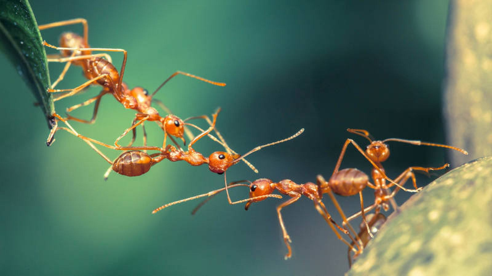
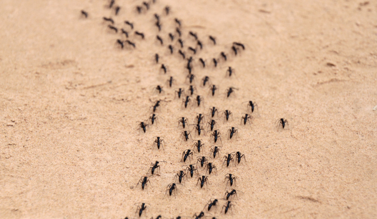

¿Que son?
Las hormigas (Formicidae) son una familia de insectos eusociales que, como las avispas y las abejas, pertenecen al orden de los himenópteros. Las hormigas evolucionaron de antepasados similares a una avispa a mediados del Cretáceo, hace entre ciento diez y ciento treinta millones de años, diversificándose tras la expansión de las plantas con flor por el mundo. Se identifican fácilmente por sus antenas en ángulo y su estructura en tres secciones con una estrecha cintura. La rama de la entomología que las estudia se denomina mirmecología.

Existen más de 14.000 especies conocidas de hormigas, aunque se estima que podrían llegar a ser 22.000 especies, cada una con características y comportamientos únicos. Algunas de las especies más comunes incluyen la hormiga carpintera, la hormiga roja y la hormiga faraona.
Las hormigas son conocidas por su comportamiento social complejo. Viven en colonias organizadas con diferentes castas, incluyendo reinas, obreras y soldados. La comunicación entre las hormigas se realiza principalmente a través de feromonas.

Las hormigas desempeñan un papel vital en los ecosistemas al airear el suelo, dispersar semillas y controlar poblaciones de otros insectos. Su presencia contribuye a la biodiversidad y al equilibrio ecológico.
La mayoría de las especies de hormigas son univoltinas, y producen una nueva generación cada año. Durante el periodo de apareamiento, que varía dependiendo de la especie, los machos y hembras alados salen al exterior (generalmente los machos lo hacen antes que las hembras) en el llamado vuelo nupcial. Los machos utilizan señales visuales para buscar un lugar de apareamiento común donde convergen otros machos; entonces secretan unas feromonas para que acudan las hembras. Las hembras de algunas especies se aparean con un solo macho, pero en otras pueden aparearse con hasta diez o más machos diferentes, almacenando el esperma en su espermateca. Las hembras que se han apareado buscan después un lugar adecuado para empezar una nueva colonia; allí se arrancan las alas y empiezan a poner los huevos y a cuidarlos.

Las hembras almacenan el esperma que obtienen durante su vuelo nupcial para fertilizar de manera selectiva los futuros huevos. Las primeras obreras que nacen son débiles y más pequeñas que las que nacen con posterioridad, pero empiezan a servir a la colonia inmediatamente; amplían el hormiguero, buscan alimentos y cuidan de los otros huevos. En la mayoría de las especies, es así como se forman las colonias. En las especies que tienen varias reinas, una de ellas puede abandonar el hormiguero, junto con algunas obreras, para fundar una nueva colonia en otro lugar.